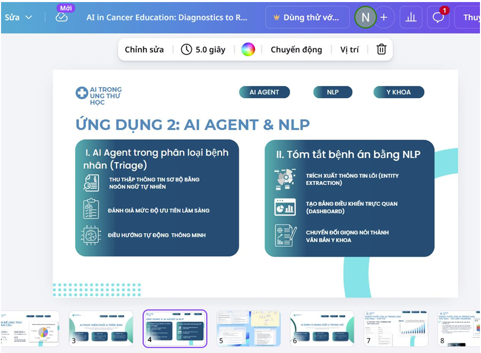
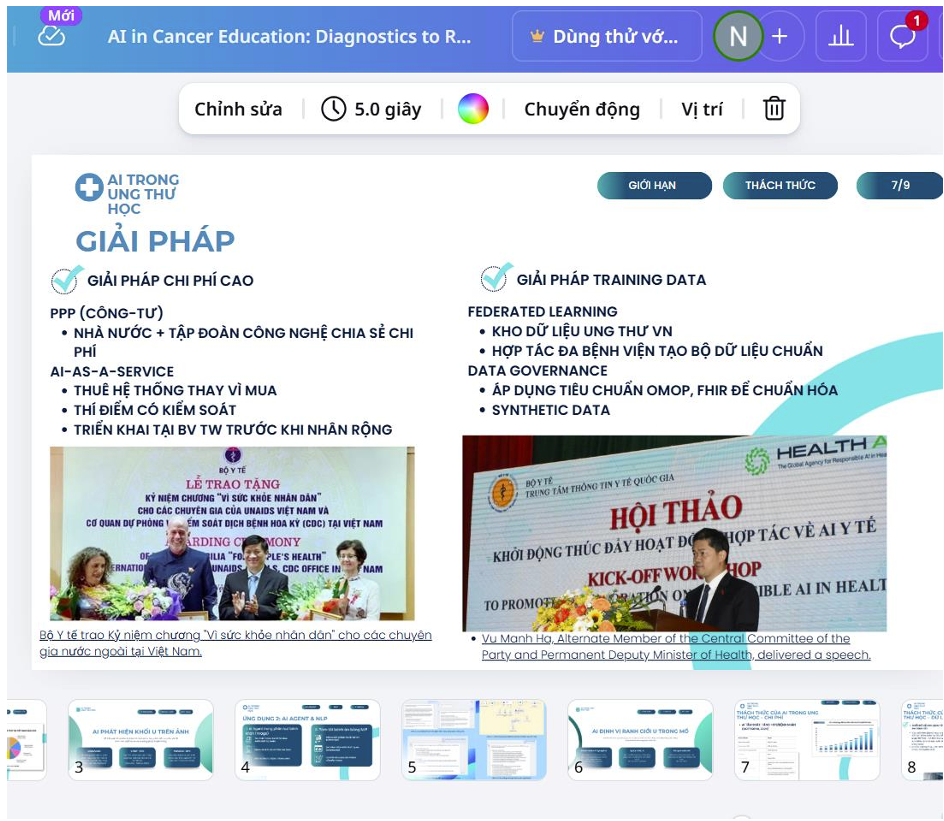
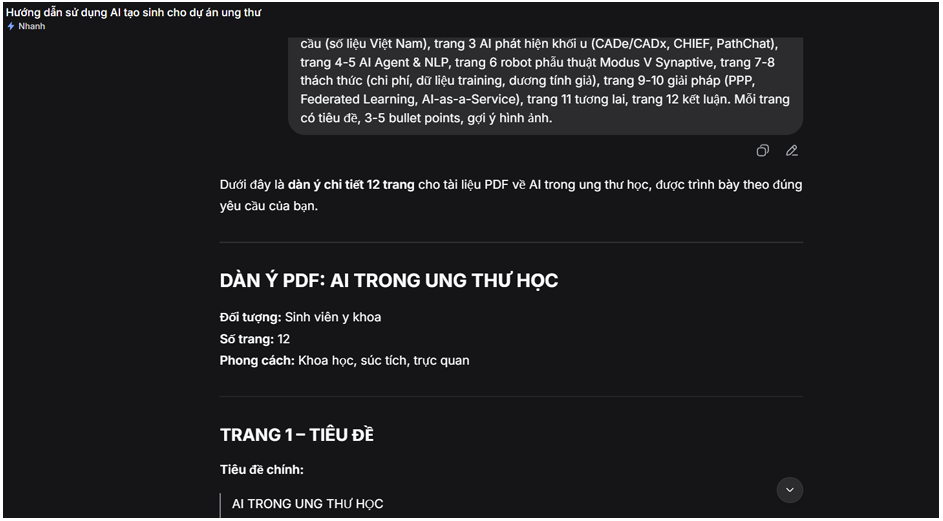
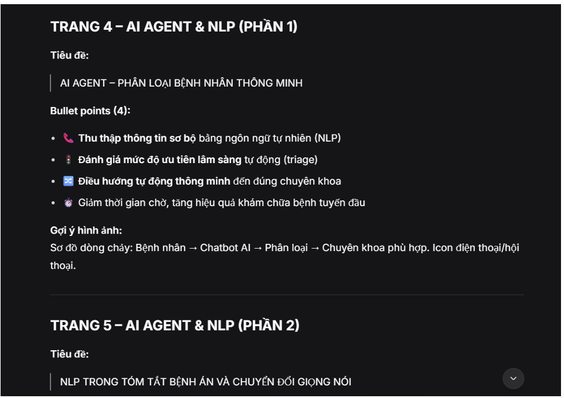
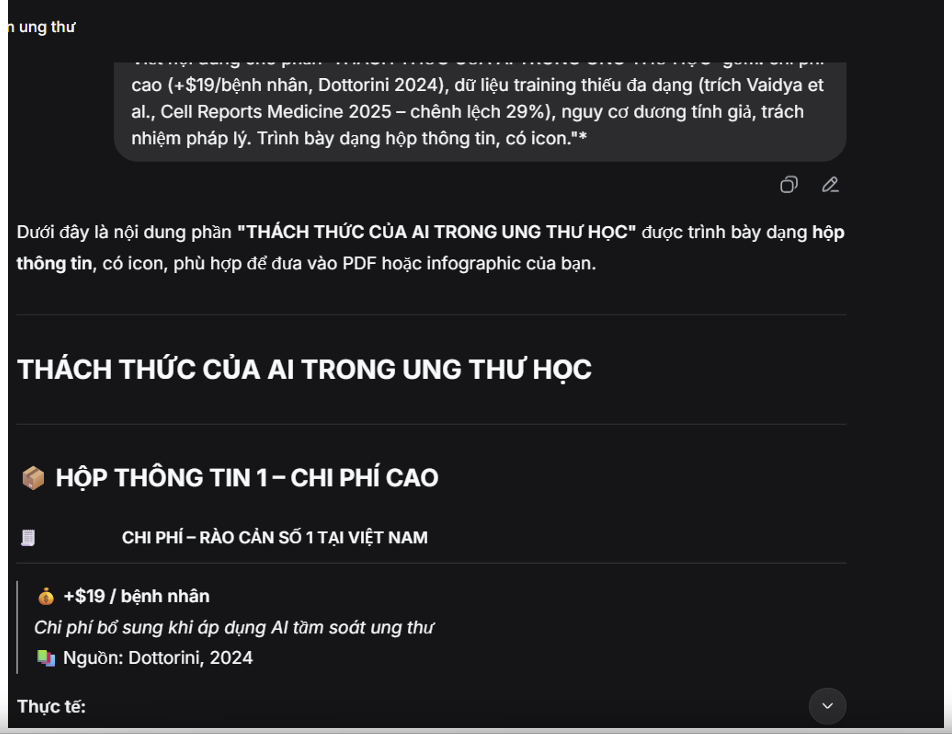
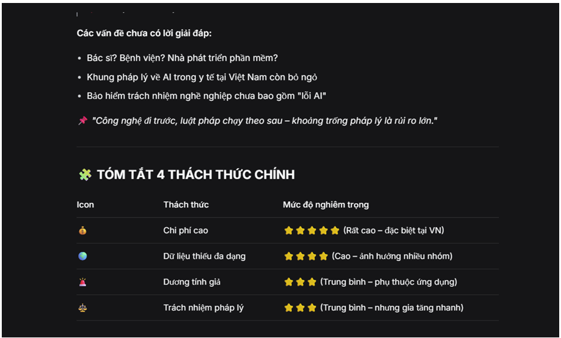

Họ và tên: Nguyễn Quốc Cường
MSSV: 25022799
Tên dự án: AI trong Ung thư học: Từ chẩn đoán chính xác đến phẫu thuật thông minh – Tài liệu PDF chuyên khảo cho sinh viên Y năm cuối
Sản phẩm cuối cùng: File PDF gồm 12 trang (đính kèm)
Lý do chọn dự án: Đề tài AI trong ung thư học đang rất nóng, có nhiều số liệu cập nhật (2024-2026), phù hợp để thực hành kỹ năng tổng hợp, phân tích và trình bày nội dung khoa học bằng AI tạo sinh.
"Hãy lập dàn ý chi tiết cho một tài liệu PDF về AI trong ung thư học, dài 10-12 trang, dành cho sinh viên y khoa. Yêu cầu:
• Trang 1: Tiêu đề ấn tượng + câu mở đầu
• Trang 2: Vấn đề ung thư toàn cầu (số liệu Việt Nam cụ thể)
• Trang 3: AI phát hiện khối u trên ảnh (CADe/CADx, CHIEF, PathChat)
• Trang 4-5: AI Agent & NLP (phân loại bệnh nhân, tóm tắt bệnh án)
• Trang 6: Robot phẫu thuật Modus V Synaptive
• Trang 7-8: Thách thức (chi phí, dữ liệu training, dương tính giả, pháp lý)
• Trang 9-10: Giải pháp (PPP, Federated Learning, AI-as-a-Service)
• Trang 11: Tương lai (telesurgery, dự báo tiên lượng)
• Trang 12: Kết luận + thông điệp chính
Mỗi trang cần có tiêu đề, 3-5 bullet points, và gợi ý loại hình ảnh minh họa."
Kết quả: Dàn ý 12 trang rõ ràng, đầy đủ các mục theo yêu cầu, kèm gợi ý hình ảnh cho từng trang.
Chỉnh sửa: Tôi đã điều chỉnh thứ tự: gộp thách thức và giải pháp vào đúng 4 trang để tiết kiệm không gian và tăng tính kết nối.
"Viết nội dung hoàn chỉnh cho TRANG 3 của PDF với tiêu đề 'AI PHÁT HIỆN KHỐI U TRÊN ẢNH'. Yêu cầu:
• Giải thích CADe/CADx, có ví dụ Bệnh viện 199 (09/2024)
• Trình bày CHIEF: 94% chính xác trên 11 loại ung thư, nguồn Harvard – Nature 2024
• Trình bày PathChat: 90% chính xác từ sinh thiết, vượt GPT-4V, nguồn Đại học Y Harvard 2024
• Sử dụng định dạng bullet points, có biểu tượng cảm xúc hoặc icon đề xuất
• Thêm một câu 'takeaway' ở cuối trang"
Kết quả: CADe/CADx – Hệ thống phát hiện & chẩn đoán qua máy tính; CHIEF – 94% chính xác trên 11 loại ung thư; PathChat – 90% chính xác từ sinh thiết.
"Create a medical illustration for a PDF page about robotic brain surgery. Show the Modus V Synaptive robotic system with a surgical arm operating on a human brain. The tumor boundary should glow in red. Add subtle AI neural network lines (blue) around the brain. Background dark blue. Photorealistic but clean, 16:9 aspect ratio, no text."
Kết quả: Hình ảnh robot và đường viền u rõ nét. Tuy nhiên, phần "bó dẫn truyền thần kinh" không được thể hiện rõ.
Chỉnh sửa: Tôi đã tải ảnh vào Canva và dùng công cụ vẽ tay để thêm các đường cong màu vàng mô phỏng bó dẫn truyền thần kinh.
"Tạo template PDF chuyên nghiệp về y học, chủ đề AI trong ung thư học. Phong cách hiện đại, đáng tin cậy, mang tính giáo dục. Màu chủ đạo: xanh dương y tế (#0A5C8E) và trắng. Font chữ: Montserrat cho tiêu đề, Lato cho nội dung. Yêu cầu có: header với icon neural network, số trang ở góc dưới bên phải, khung trích dẫn màu xanh nhạt."
Kết quả: Canva tự động sinh ra 3 template khác nhau. Tôi chọn template số 2 (có phần header lớn và vùng nội dung chia cột linh hoạt).
Tích hợp và chỉnh sửa: Thay thế nội dung mẫu bằng văn bản từ DeepSeek, chèn ảnh DALL-E đã chỉnh sửa, thêm icon bằng Canva Magic Media, điều chỉnh font chữ và màu sắc, thêm khung "Thông điệp chính: AI – Ống nghe thế kỷ 21".






| Công cụ | Điểm mạnh | Điểm yếu |
|---|---|---|
| DeepSeek | Tóm tắt chính xác số liệu, hiểu ngữ cảnh y khoa Việt Nam, viết prompt hiệu quả | Đôi khi quá chi tiết, không tự phát hiện mâu thuẫn logic |
| DALL-E 3 | Tạo hình ảnh y tế chất lượng cao, đẹp, chân thực | Không hiểu tiếng Việt, sai số liệu/tỷ lệ, cần hậu kỳ nhiều |
| Canva AI | Tích hợp dễ dàng, tự động bố cục, tiết kiệm ~70% thời gian thiết kế | Bố cục lộn xộn nếu quá nhiều chữ, template y tế chưa phong phú |
Thay đổi lớn nhất: Tôi chuyển từ vai trò "người làm tất cả" sang "người lên ý tưởng, ra quyết định và kiểm định". AI làm phần nặng nhọc, tôi làm phần chất lượng.
Dự án này chứng minh rằng AI tạo sinh không phải là "cỗ máy thay thế con người" mà là "trợ lý đắc lực" nếu biết cách sử dụng đúng. DeepSeek giúp viết nội dung chuyên môn nhanh gấp 3-4 lần, DALL-E giúp có hình ảnh độc đáo không tốn bản quyền, Canva AI giúp thiết kế chuyên nghiệp dù không có kỹ năng đồ họa.
Tuy nhiên, mọi quyết định quan trọng – chọn số liệu nào để nhấn mạnh, thông điệp chính là gì, bố cục nào dễ đọc nhất – đều do tôi quyết định. AI làm nhanh, nhưng không làm thay suy nghĩ. Sản phẩm cuối cùng là kết quả của sự cộng sinh giữa trí tuệ nhân tạo và tư duy con người.
📅 Hoàn thành: 15/04/2026 | Môn: Nhập môn Công nghệ số & Ứng dụng Trí tuệ nhân tạo | MSSV: 25022799